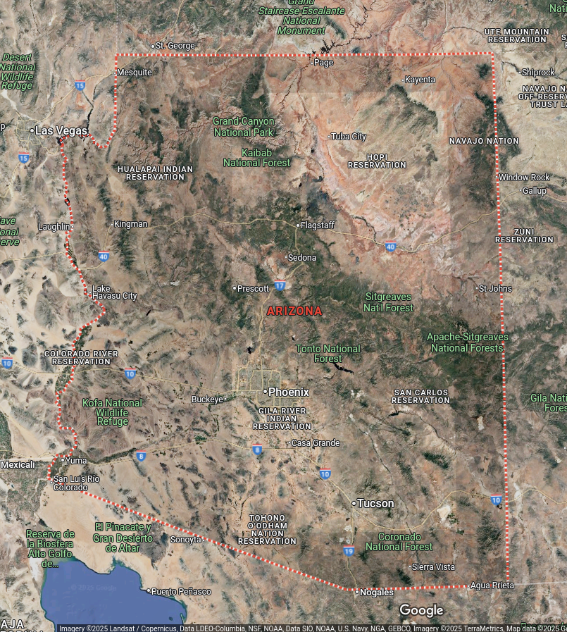
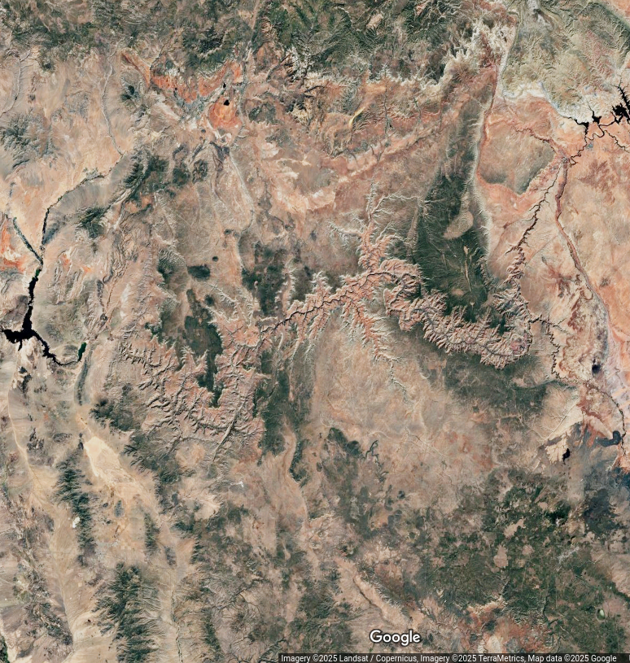
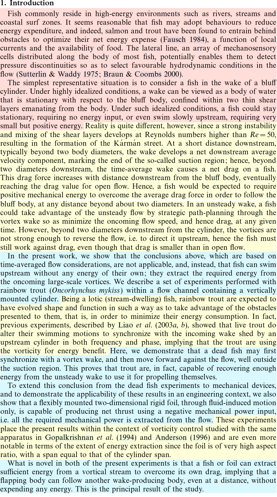
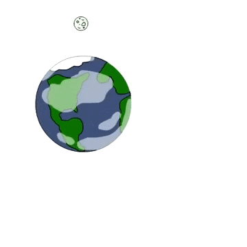

Introductions
Don’t start with the Introduction
- Good place to start reading
- Bad place to start writing
![A funnel-shaped set of lines from wide to narrow. On the left side, there are three phrases, oriented from top to bottom (wide to narrow): Territory, Find a Niche, Occupy the Niche. On the right side, there are three groups of two lines each. First, General Context and narrower topic area + importance. Second, Identification of a gap/need and specific research/report question addressing the need. Third, Summary of approach to answering the question, and preview of principal findings. These sections are aligned with the corresponding niche list on the other side of the funnel.](images/Introduction-overview.png)
Structure of a ‘typical’ introduction
Introductions…
- No standard template
- No standard subsection heads
- Usually few required elements
- Audience focused
- Who are they?
- What do they already know?
- What do they care about?
- How can you introduce your topic with minimal confusion?
“Create a Space” model




Creating a Space
1st paragraph of Katy Y. Y. Tam et al. “Boredom Begets Boredom: An Experience Sampling Study on the Impact of Teacher Boredom on Student Boredom and Motivation,” British Journal of Educational Psychology 90 (2020): 124–37, https://doi.org/10.1111/bjep.12309.
Opening the door to a classroom in the middle of a lesson, while the teacher is busy explaining one concept after another, you might find a scene of students looking bored, resting their heads on the desk, dozing off, doodling on their notebooks, or secretly playing with their phones. Boredom is an emotion commonly reported by students (e.g., Goetz et al., 2014; Mann & Robinson, 2009).
Topic ID + relatability + importance
Boredom impedes students’ learning motivation and academic performance (e.g., Pekrun, Goetz, Daniels, Stupnisky, & Perry, 2010; Tze, Daniels, & Klassen, 2016). Whereas much attention has been given to students’ experience of boredom in educational settings, little is known about teachers’ boredom, especially how it might affect students’ boredom and learning experience.
Identify the problem and hole in existing work
Through experience sampling method, the current study investigated the interplay of teachers’ boredom, students’ perceived teacher boredom, students’ boredom, and students’ learning motivation.
Occupy the niche – preview the investigation/findings
Creating a Space

D. Beal et al. “Passive Propulsion in Vortex Wakes,” Journal of Fluid Mechanics 549 (February 25, 2006): 385–402, https://doi.org/10.1017/S0022112005007925.
Big picture – fish live in high-energy environments and adopt strategies to reduce energy expenditure
Narrower – Reality is more complicated and there are factors to consider like shear and wakes
This experiment shows that the narrower picture isn’t relevant - swimming upstream with no energy input is possible
More background info about trout
This experiment shows dead fish move upstream in some cases. It also shows that foils can do the same thing.
Context of previous vorticity experiments
Flapping bodies can overcome their own drag with vortex energy.
Defining the territory
Here is the earth… this meme is probably older than you are.
How broad you start depends on the audience
Define any really important terms
Explain why the topic matters
Start to narrow the topic
Establish a niche
Identify a concrete, open problem
- gap in knowledge
- apparent contradictions
- impact of new data
State the central question of your investigation
Occupy the niche
How does your work approach the niche you’ve identified?
What approach(es) are you using?
- Not detailed methods, but past literature on how those methods were established may be useful
How does the answer solve the open problem?
Ending an Intro
Lots of disagreement on how to do this
- State central question/approach
- Summary of your results
Business Reports
Introduction should be on a new page. It contains:
Objective
Main points of your report (in order)
Chosen report structure (where to look for things )
Not dissimilar from the general structure, but more to the point. No “here is the earth” introductory paragraphs.